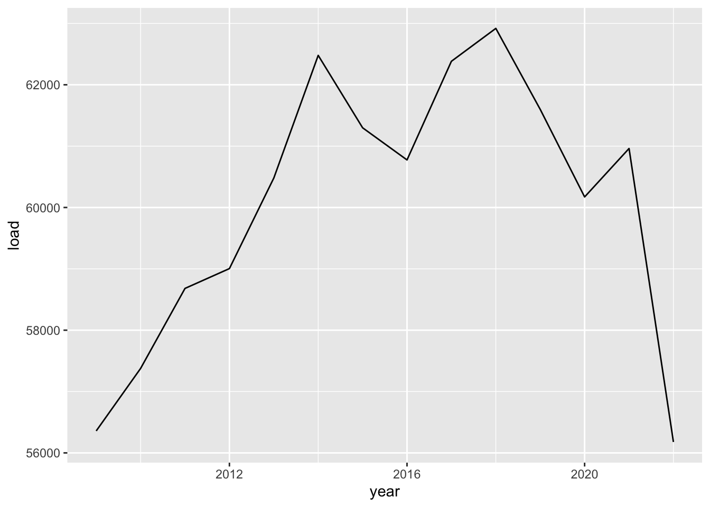
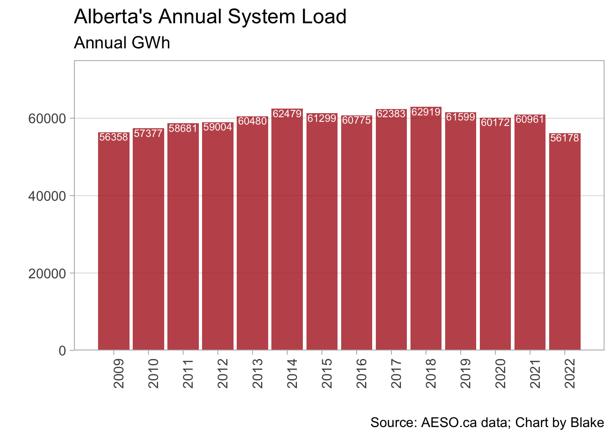

Hello class!
To start our adventure in R, let’s start by loading the required software software:
Once you’ve done that, you want to go to RStudio and select:
You should now have a blank source pane in which to start writing!
Start by installing and loading packages. While R has base abilities,
adding packages made by the myriad of users is what makes R so
versatile. Let’s add the tidyverse to start, it’s a
collection of important packages made by the people at RStudio. We
should also add readxl because we are going to read in an
excel file.
#install.packages("tidyverse") #this installs the package (remove the hashtag to uncomment and run this line the first time you run it)
#install.packages("readxl") #this installs the package (remove the hashtag to uncomment and run this line the first time you run it)
library(tidyverse) #this loads the installed package
library(readxl) #this loads the installed packageNext, lets load in some simple data just to play around.
We will start by downloading a file from the AESO’s Data Requests
page (a treasure trove of great data sets!). Once that is downloaded, we
will read it into R as a dataframe object called data:
download.file("https://aeso.ca/assets/Uploads/data-requests/System-Load-Annual-2009-to-2022.xlsx",
destfile="annual_load.xlsx",
mode="wb")
data <- read_xlsx("annual_load.xlsx")Let’s take a peak at this data object:
head(data)## # A tibble: 6 × 3
## Year `System Load (GWh)` ...3
## <dbl> <dbl> <chr>
## 1 2009 56358 <NA>
## 2 2010 57377 <NA>
## 3 2011 58681 <NA>
## 4 2012 59004 <NA>
## 5 2013 60480 <NA>
## 6 2014 62479 <NA>Ok! We have data! But there’s a weird third column and i don’t like
the variable names. Let’s delete the 3rd column and rename the first
two. To do that we will create a new dataframe called df
and use the tidyverse to make some changes:
df <- data %>% #assign data to a new object called df and then (%>%)...
select(-3) %>% #select all columns that are NOT column 3 and then (%>%)...
rename(year=Year,load=`System Load (GWh)`) #rename the columns; note the backticks, that's how you deal with variable names that have spaces.
head(df) #let's peek at the first few rows of this new object## # A tibble: 6 × 2
## year load
## <dbl> <dbl>
## 1 2009 56358
## 2 2010 57377
## 3 2011 58681
## 4 2012 59004
## 5 2013 60480
## 6 2014 62479Much nicer!
Now let’s explore the data using a quick chart. Let’s plot the annual system load by year.
ggplot(df,aes(x=year,y=load))+ #we are creating a plot using the dataframe `df` and the aesthetics will involve year on the x-axis and load on the y-axis
geom_line() #plot a line using the aesthetics assigned above (note we could have assigned them here as well)
Not bad! Our first chart!
Now let’s try a nicer looking version. Maybe a bar chart…
ggplot(df,aes(year,load,label=load))+
geom_col(fill="firebrick",alpha=.8)+
geom_text(vjust=1.1,size=2.5,fontface="bold",color="white")+
scale_x_continuous(breaks=seq(2009,2022,1))+
scale_y_continuous(limits=c(0,75000),expand=c(0,0))+
labs(x="",y="",
title="Alberta's Annual System Load",
subtitle="Annual GWh",
caption="Source: AESO.ca data; Chart by Blake")+
theme_light(14)+
theme(panel.grid.minor=element_blank(),
panel.grid.major.x=element_blank(),
axis.text.x=element_text(angle=90))
Now it’s your turn!
For this initial exercise, I want you to do two things:
Create your own time series chart using the data above. Use the
principles of good data visualization to create a clear chart that
easily conveys the data to the viewer. You may want to explore the
ggthemes package, which has some nice preset themes to
change the appearance of the chart. A great resource for good data
visualization (IMHO) is Claus Wilke’s (free) e-book Fundamentals of Data
Visualization. Along with your new time series chart, make a note of
a principle you’ve taken from the book in making your chart.
There aren’t too many ways to slice and dice this simple dataset, but how about a time series of annual percentage changes. Some tips to get you started on doing that:
mutate
command. For example
df <- df %>% mutate(double_load = 2 x load) would
update the df dataframe with a newly created variable
double_load with, you guessed it, twice the value of the
old load variable.lag function
that is part of the tidyverse’s dplyr package (no need to
load this package; it is part of the tidyverse)For more tips on learning R and creating charts using
ggplot, I highly recommend the free e-book R for Data Science by Hadley Wickham.
It starts from zero and takes you to producing creative charts very
quickly.